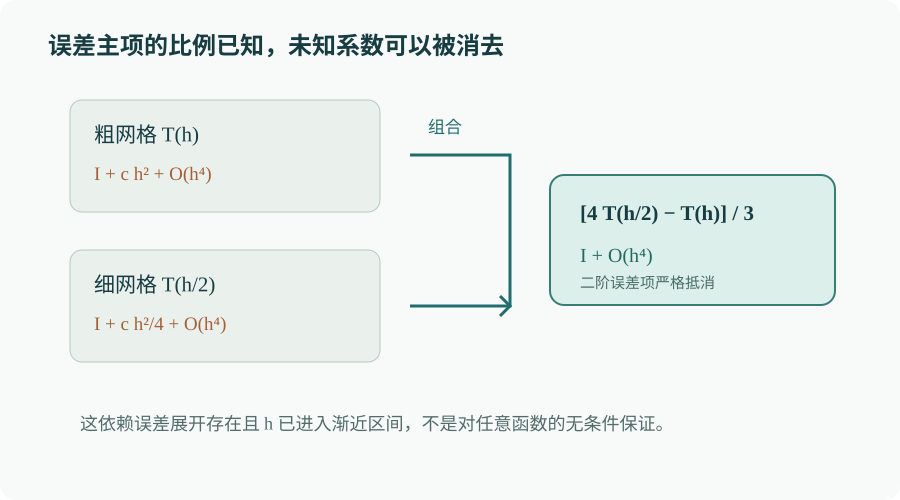

CHAPTER 11 · NUMERICAL ANALYSIS
复合求积与 Romberg：从步长收敛到外推表
复合梯形如何复用采样点？Richardson 外推怎样消去主导误差？从全局误差阶、Romberg 三角表到收敛失效边界，完整建立可复现的积分算法。
01 · 步长减半，为什么误差不是每次都恰好缩小四倍？
把 f(x)=x⁴ 在 [0,1] 上积分，精确值是 1/5。单段梯形给出 1/2；把区间二等分，复合梯形变成 9/32=0.28125。误差明显下降，但并没有“自动变成精确值”。继续细分时，误差在渐近区间里大致按四倍缩小；再细到浮点误差或函数噪声主导时，这个比例就会失效。
本章解决两个不同的问题：复合求积通过局部近似控制每段误差；Romberg 外推利用误差随步长变化的规律，组合多个近似以消去主导误差项。它不是把任意函数的积分神奇地变成精确值，而是对一类平滑函数的渐近误差展开进行代数消元。

02 · 复合梯形：局部面积相加与全局误差
将区间均匀分成 n 段，步长 h=(b−a)/n，节点 xᵢ=a+ih。每段用端点连线替代曲线，再把梯形面积求和。对 f∈C²[a,b]，全局误差为二阶量；注意这是固定区间、等距细分和足够光滑前提下的结果。
如果 |f″(x)|≤M₂，则常用的全局误差上界为 |I−Tₙ|≤(b−a)M₂h²/12。这个界依赖二阶导数有界，通常偏保守；它不是每个具体函数的实际误差公式。对光滑函数，Euler–Maclaurin 展开还能给出更细的偶次幂误差结构，这正是 Romberg 能工作的前提。
从工程角度看，复合梯形的价值不仅在于误差阶：当网格每次二分时，旧节点全部保留，新增点恰好是旧网格每个小区间的中点。这样就可以递推更新积分近似，避免重复函数求值。
03 · Richardson 外推：用两次近似消去一个误差项
假设粗网格和细网格的梯形近似共享同一积分值，且误差首项确实服从 c₁h²。那么将 h 换成 h/2 后，该项缩小到原来的四分之一。对两个方程做线性组合即可消去未知常数 c₁，不需要先知道函数的二阶导数。
第一层外推恰好等价于相应网格上的复合 Simpson 公式；但从第二层开始，Romberg 不再只是重复套用固定 Newton–Cotes 权重，而是在外推表中逐次消除 h⁴,h⁶,… 项。第 j 层使用比例 2^{2j}，因为前一层的主导误差阶已提高到 2j。

04 · Romberg 三角表：每一列再提高一个误差阶
令 Rₖ,₀ 表示使用 2ᵏ 个小区间的复合梯形结果。列号 j 表示已经完成 j 次外推。行列关系为：左侧第一列由网格二分生成，右侧每个格子由其左上和上方的两个近似组合。

第一列可以通过式 (11.3) 增量计算。实际程序通常保存前一行和当前行即可，不必保留完整二维表；但教学表格保留所有项有助于观察收敛趋势。常见误差指示量是相邻对角线差值 |Rₖ,ₖ−Rₖ₋₁,ₖ₋₁|，它只有在渐近区间内才具有可靠的误差估计意义，不是对所有积分都成立的严格上界。
05 · 可复现实现：新网格只评价新增中点
import math
def romberg(f, a, b, levels=6):
h = b - a
row = [0.5 * h * (f(a) + f(b))]
table = [row[:]]
for k in range(1, levels):
n = 2 ** (k - 1)
midpoint_sum = sum(
f(a + (j + 0.5) * h) for j in range(n)
)
h *= 0.5
t_new = 0.5 * row[0] + h * midpoint_sum
# Equivalent: T( h_old/2 ) = T(h_old)/2 + h_old/2 * sum(midpoints)
new = [t_new]
for j in range(1, k + 1):
new.append(
(4**j * new[j-1] - row[j-1]) / (4**j - 1)
)
row = new
table.append(row[:])
return table
table = romberg(math.exp, 0.0, 1.0, levels=6)
exact = math.e - 1.0
assert abs(table[-1][-1] - exact) < 1e-13
assert abs(table[1][1] - exact) < abs(table[1][0] - exact)
print("R[5,5] =", table[-1][-1], "error =", abs(table[-1][-1]-exact))这段实现故意只返回三角表，不把“对角线差”包装成严格误差界。每次细分会评价 2ᵏ⁻¹ 个新中点；从而总函数评价数与最终最细网格节点数同阶，而不是每层都从头计算全部节点。
06 · 何时停止：误差阶不是永远有效的承诺
复合梯形与 Romberg 的误差分析依赖网格逐次细化以及足够的光滑性。若积分区间内有跳跃间断，误差展开通常不再是整齐的偶次幂序列；若端点有代数奇异性，误差阶也可能改变。此时外推仍可能给出一个数字，但不能只看它稳定到多少位就断言结果可信。
实用的停止条件应同时考虑：对角线变化量是否低于绝对/相对容差；函数评价预算是否用尽；外推表是否出现停滞或误差反弹；输入函数是否具有足够光滑性。对局部难点，可先分段积分，再对各段分别使用 Romberg，或选择带局部误差估计的自适应 Gauss–Kronrod 方法。
本章与下一章的连接是：Romberg 改善的是固定网格梯形公式的误差展开；Gauss 求积则改变节点和权重，让有限个采样值对更高次数多项式精确。两者优化的自由度不同，不能只用“阶数更高”作简单排名。
原始资料与延伸阅读
理论结论按原始数学资料与维护方文档交叉核对；本页图解、数值表和代码是独立构造的教学示例。
- NIST DLMF §3.5 · Quadrature：复合梯形、Simpson、Romberg、Gauss 求积与误差展开。
- LeMesurier · Romberg Integration：梯形细分复用、Romberg 三角表与 Richardson 外推递推。